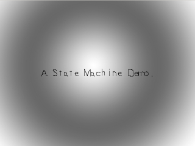
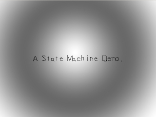
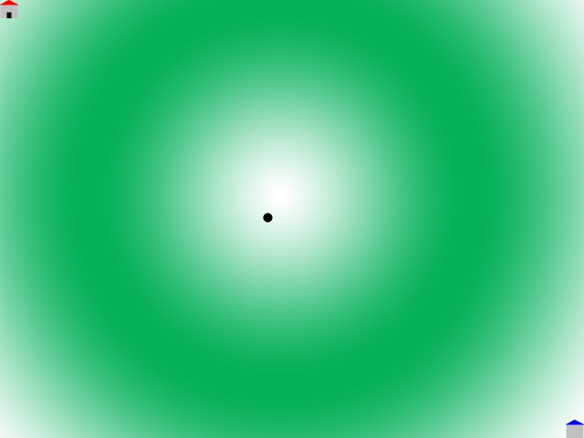
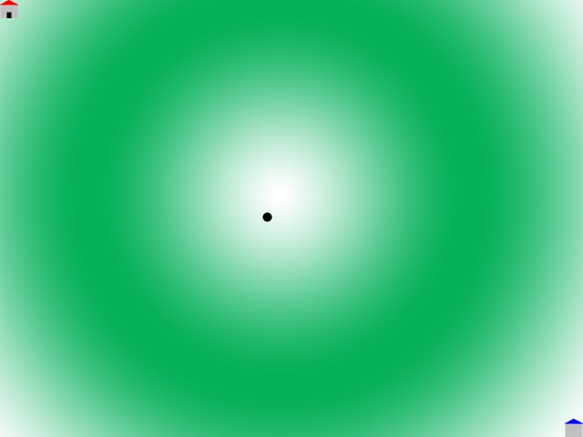
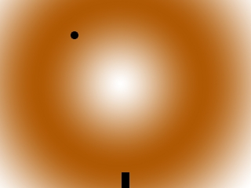
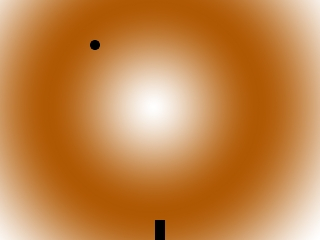
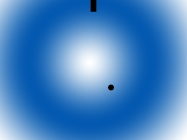
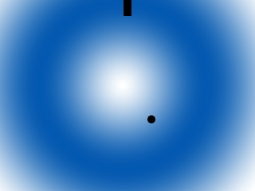

State Machines
Last Updated 12/27/11
It's important to know how to move between the various modes of a game. State machines allow you to do just that.
Let me start off by saying this is a huge article. The source code for the demo program is over 1000 lines of
code. We use motion, collision detection and scrolling so make sure you know do how to these things. You'll also
need a good understanding of game loops. State machines are all about changing how your game loop functions.
You're also going to have to know inheritance and polymorphism. If you're not familiar these concepts in C++ I recommend you learn them. Besides needing them for this article, encapsulation, inheritance, and polymorphism are the key concepts of object oriented programming. If you ever want to use C++ effectively, you're going to have to learn them eventually. We also use operator overloading in the example program, but it's not vital to your understanding of state machines so don't worry about it too much. Now on with the lesson.
Say you have various modes in your game like a title screen, menus, and the levels of your game. For each of those modes the events, logic, and rendering work differently. To change the way your game loop works, we use a state machine to transition between the different states.
The particular type of state machine used here is called a finite state machine. There's two common ways to implement this type of state machine.
You're also going to have to know inheritance and polymorphism. If you're not familiar these concepts in C++ I recommend you learn them. Besides needing them for this article, encapsulation, inheritance, and polymorphism are the key concepts of object oriented programming. If you ever want to use C++ effectively, you're going to have to learn them eventually. We also use operator overloading in the example program, but it's not vital to your understanding of state machines so don't worry about it too much. Now on with the lesson.
Say you have various modes in your game like a title screen, menus, and the levels of your game. For each of those modes the events, logic, and rendering work differently. To change the way your game loop works, we use a state machine to transition between the different states.
The particular type of state machine used here is called a finite state machine. There's two common ways to implement this type of state machine.
//Do logic
switch( gameState )
{
case STATE_INTRO:
intro_logic();
break;
case STATE_TITLE:
title_logic();
break;
case STATE_OVERWORLD:
overworld_logic();
break;
}
Here's what a state machine's logic module would look like if it was used implementing the switch/case method. As
you can see, the behavior varies depending on the current game state.
Then there's the object oriented method.
Then there's the object oriented method.
//Create game state object
GameState currentState = new myState();
//Run main loop
while( quit == false )
{
//Do events
currentState->events();
//Do logic
currentState->logic();
//Change state if needed
change_state();
//Render
currentState->render();
}
Here's what the object oriented method would look like.
Now with the object oriented method, we create a base game state class with virtual functions for each part of the game loop. Then we have game state classes that inherit from the base class and override the functions to work as the game state needs them to. To switch the game state, we simply change the game state object as needed.
In our demonstration, we use the object oriented method as opposed to the switch/case method. Why, you ask?
Now with the object oriented method, we create a base game state class with virtual functions for each part of the game loop. Then we have game state classes that inherit from the base class and override the functions to work as the game state needs them to. To switch the game state, we simply change the game state object as needed.
In our demonstration, we use the object oriented method as opposed to the switch/case method. Why, you ask?
while ( quit == false )
{
//Do events
switch( gameState )
{
case STATE_INTRO:
intro_events();
break;
case STATE_TITLE:
title_events();
break;
case STATE_MENU:
menu_events();
break;
case STATE_STAGE01:
stage01_events();
break;
case STATE_STAGE02:
stage02_events();
break;
case STATE_STAGE03:
stage03_events();
break;
case STATE_STAGE04:
stage04_events();
break;
case STATE_STAGE05:
stage05_events();
break;
case STATE_BONUS_STAGE:
bonus_stage_events();
break;
}
//Do logic
switch( gameState )
{
case STATE_INTRO:
intro_logic();
break;
case STATE_TITLE:
title_logic();
break;
case STATE_MENU:
menu_logic();
break;
case STATE_STAGE01:
stage01_logic();
break;
case STATE_STAGE02:
stage02_logic();
break;
case STATE_STAGE03:
stage03_logic();
break;
case STATE_STAGE04:
stage04_logic();
break;
case STATE_STAGE05:
stage05_logic();
break;
case STATE_BONUS_STAGE:
bonus_stage_logic();
break;
}
//Change the state if needed
change_state();
//Do Rendering
switch( gameState )
{
case STATE_INTRO:
intro_render();
break;
case STATE_TITLE:
title_render();
break;
case STATE_MENU:
menu_render();
break;
case STATE_STAGE01:
stage01_render();
break;
case STATE_STAGE02:
stage02_render();
break;
case STATE_STAGE03:
stage03_render();
break;
case STATE_STAGE04:
stage04_render();
break;
case STATE_STAGE05:
stage05_render();
break;
case STATE_BONUS_STAGE:
bonus_stage_render();
break;
}
}
The problem with the switch/case method is that it can get cluttered pretty quickly. There's only 9 states
represented here and just look how many lines of code there are. It's also a pain having to keep track of all
those case statements.
With the object oriented method in our demo, the state manager only needs 3 lines more of code per state compared to the 9 the switch/case method would need. So it's best to keep the switch/case method to small scale stuff like changing a sprite's animation.
So let's get started with our state machine demo.
With the object oriented method in our demo, the state manager only needs 3 lines more of code per state compared to the 9 the switch/case method would need. So it's best to keep the switch/case method to small scale stuff like changing a sprite's animation.
So let's get started with our state machine demo.
//Game states
enum GameStates
{
STATE_NULL,
STATE_INTRO,
STATE_TITLE,
STATE_GREEN_OVERWORLD,
STATE_RED_ROOM,
STATE_BLUE_ROOM,
STATE_EXIT,
};
Here are the constants we're going to use to represent the various states in our application.
The exit state is used when the user wants to quit the program. Setting the state to exit is like setting quit to true in our other applications.
The NULL state is used when we want to say that there is no state we want to change to. You'll see it in action in the change_state() function later on.
First we have the intro screen. It's the state we start in.
Then when the user presses a key we move to the title screen.


When the user presses a key again we move to the overworld.


When the user moves the dot over the red house in the upper left corner, we move into the red room.

When they go through the door, they go back to the overworld.

When they go through the door, they go back to the overworld.
When the user moves the dot over the blue house in the bottom right corner of the overworld,
we move into the blue room.

We they go through the door, they go back to the overworld just like with the red room.

We they go through the door, they go back to the overworld just like with the red room.
The exit state is used when the user wants to quit the program. Setting the state to exit is like setting quit to true in our other applications.
The NULL state is used when we want to say that there is no state we want to change to. You'll see it in action in the change_state() function later on.
/*Classes*/
//Game state base class
class GameState
{
public:
virtual void handle_events() = 0;
virtual void logic() = 0;
virtual void render() = 0;
virtual ~GameState(){};
};
Here's the base class for all our game state classes. You can see we have virtual functions for each part of a
game loop and a virtual destructor.
//State status manager
void set_next_state( int newState );
//State changer
void change_state();
Here are our functions for managing our game state. We use set_next_state() to set the state we want to change to
and change_state() changes the actual game state object. We'll go into more detail on how these work later.
//State variables
int stateID = STATE_NULL;
int nextState = STATE_NULL;
//Game state object
GameState *currentState = NULL;
These are the variables we use to manage our state machine. "stateID" tells us what the current state is, and
"nextState" obviously tells us what the next state is going to be when we want to change it.
Last but certainly not least is "currentState" which points to the current state object.
Last but certainly not least is "currentState" which points to the current state object.
bool load_files()
{
//Load the dot image
dot = load_image( "dot.bmp" );
//If there was a problem in loading the dot
if( dot == NULL )
{
return false;
}
//Open the font
font = TTF_OpenFont( "lazy.ttf", 36 );
//If there was an error in loading the font
if( font == NULL )
{
return false;
}
//If everything loaded fine
return true;
}
Here's our main file loading function which loads the dot graphic and the font. We'll want these resources
available in whatever state we're in.
class Intro : public GameState
{
private:
//Intro background
SDL_Surface *background;
//Intro message
SDL_Surface *message;
public:
//Loads intro resources
Intro();
//Frees intro resources
~Intro();
//Main loop functions
void handle_events();
void logic();
void render();
};
class Title : public GameState
{
private:
//Title screen background
SDL_Surface *background;
//Title screen message
SDL_Surface *message;
public:
//Loads title screen resources
Title();
//Frees title resources
~Title();
//Main loop functions
void handle_events();
void logic();
void render();
};
Here are the class declarations for the intro and title screen states which inherit from the GameState class.
They both just show a message on a background.
They have a background and message surfaces, constructors and destructors, and their functions for the game loop.
They have a background and message surfaces, constructors and destructors, and their functions for the game loop.
Intro::Intro()
{
//Load the background
background = load_image( "introbg.png" );
//Render the intro message
message = TTF_RenderText_Solid( font, "Lazy Foo' Productions Presents...", textColor );
}
Intro::~Intro()
{
//Free the surfaces
SDL_FreeSurface( background );
SDL_FreeSurface( message );
}
In the intro state constructor we load the background image and render the message which we're going to need while
in the intro game state. Naturally, in the destructor we free these resources.
void Intro::handle_events()
{
//While there's events to handle
while( SDL_PollEvent( &event ) )
{
//If the user has Xed out the window
if( event.type == SDL_QUIT )
{
//Quit the program
set_next_state( STATE_EXIT );
}
//If the user pressed enter
else if( ( event.type == SDL_KEYDOWN ) && ( event.key.keysym.sym == SDLK_RETURN ) )
{
//Move to the title screen
set_next_state( STATE_TITLE );
}
}
}
Here's the event handling function for the intro game state.
When the user tries to quit we set the next state to exit using set_next_state(). When the user presses enter, we want to move to the title screen so we set the next state to the title screen.
You're probably wondering how set_next_state() works. Well then let's take a look.
When the user tries to quit we set the next state to exit using set_next_state(). When the user presses enter, we want to move to the title screen so we set the next state to the title screen.
You're probably wondering how set_next_state() works. Well then let's take a look.
void set_next_state( int newState )
{
//If the user doesn't want to exit
if( nextState != STATE_EXIT )
{
//Set the next state
nextState = newState;
}
}
All set_next_state() does is set the "nextState" variable.
Remember that a good game loop is modular so we can't be changing game state objects all over the place. All the actual game state object changing happens in the change_state() function (which we'll get to in a little bit). So we use set_next_state() to request what state we want to change to.
You might be asking yourself why we check if the user wants to exit. It can happen where there's two or more requests to change states before getting to the change_state() function.
Say if the user tries to x out in the events module and "nextState" gets set to STATE_EXIT and then dot moves over the red house in the logic module and "nextState" gets set to STATE_RED_HOUSE. This means the request to exit the application will be ignored.
But since the function checks if the user wanted to exit before changing the next state, the user quit will always go through.
Remember that a good game loop is modular so we can't be changing game state objects all over the place. All the actual game state object changing happens in the change_state() function (which we'll get to in a little bit). So we use set_next_state() to request what state we want to change to.
You might be asking yourself why we check if the user wants to exit. It can happen where there's two or more requests to change states before getting to the change_state() function.
Say if the user tries to x out in the events module and "nextState" gets set to STATE_EXIT and then dot moves over the red house in the logic module and "nextState" gets set to STATE_RED_HOUSE. This means the request to exit the application will be ignored.
But since the function checks if the user wanted to exit before changing the next state, the user quit will always go through.
void Intro::logic()
{
}
void Intro::render()
{
//Show the background
apply_surface( 0, 0, background, screen );
//Show the message
apply_surface( ( SCREEN_WIDTH - message->w ) / 2, ( SCREEN_HEIGHT - message->h ) / 2, message, screen );
}
In the intro's logic module, you can see that nothing is going there. The rendering module simply shows the
background with the message on top.
Now you've seen how a game state class works and how we request state changes, but where and how do we change state objects? Let's take a look at the main loop.
Now you've seen how a game state class works and how we request state changes, but where and how do we change state objects? Let's take a look at the main loop.
//While the user hasn't quit
while( stateID != STATE_EXIT )
{
//Start the frame timer
fps.start();
//Do state event handling
currentState->handle_events();
//Do state logic
currentState->logic();
//Change state if needed
change_state();
//Do state rendering
currentState->render();
//Update the screen
if( SDL_Flip( screen ) == -1 )
{
return 1;
}
//Cap the frame rate
if( fps.get_ticks() < 1000 / FRAMES_PER_SECOND )
{
SDL_Delay( ( 1000 / FRAMES_PER_SECOND ) - fps.get_ticks() );
}
}
In the main loop, you see the standard event, logic and rendering modules. Changing of the game state object
happens at the end of the logic module, after we call the game state object's logic() function.
Also notice that change_state() is called before the rendering module. Remember that because it's important when we look next at how change_state() works.
Also notice that change_state() is called before the rendering module. Remember that because it's important when we look next at how change_state() works.
void change_state()
{
//If the state needs to be changed
if( nextState != STATE_NULL )
{
//Delete the current state
if( nextState != STATE_EXIT )
{
delete currentState;
}
Here's the top of our state changing function.
First thing we do is check if "nextState" is not STATE_NULL. If it is NULL, it means that there's no state to change to and change_state() doesn't do anything.
If we need to change the state, we check if the next state is STATE_EXIT. If it's not, we delete the game object so the destructor is called and frees all the resources for that game state. Now we can have a new game state object which we'll get in the next bit of code.
But why don't we want to delete the object if the user wants to exit? It's because there's no game state class for exit and STATE_EXIT is just there to break the game loop. If we delete the current game state object, after change_state() is done, the game loop will try to call render() from the game state object that was just deleted which isn't good. So we just skip the deletion in change_state(), render using the current game state object one last time and end the game loop so we can exit the program.
First thing we do is check if "nextState" is not STATE_NULL. If it is NULL, it means that there's no state to change to and change_state() doesn't do anything.
If we need to change the state, we check if the next state is STATE_EXIT. If it's not, we delete the game object so the destructor is called and frees all the resources for that game state. Now we can have a new game state object which we'll get in the next bit of code.
But why don't we want to delete the object if the user wants to exit? It's because there's no game state class for exit and STATE_EXIT is just there to break the game loop. If we delete the current game state object, after change_state() is done, the game loop will try to call render() from the game state object that was just deleted which isn't good. So we just skip the deletion in change_state(), render using the current game state object one last time and end the game loop so we can exit the program.
//Change the state
switch( nextState )
{
case STATE_TITLE:
currentState = new Title();
break;
case STATE_GREEN_OVERWORLD:
currentState = new OverWorld( stateID );
break;
case STATE_RED_ROOM:
currentState = new RedRoom();
break;
case STATE_BLUE_ROOM:
currentState = new BlueRoom();
break;
}
//Change the current state ID
stateID = nextState;
//NULL the next state ID
nextState = STATE_NULL;
}
}
After we delete our old game state object it's time to get a new one. This switch/case block gives us our new
object depending on what "nextState" is. When we create the new game state object, the constructor is called and
the constructor of our game state loads the resources it needs.
Notice how the constructor for the OverWorld game state takes in "stateID". You can see "stateID" doesn't change to the new state until after the switch/case block. So this means the OverWorld object is getting the ID of the last active state. You'll see why the OverWorld object needs to know the previous state when we get to its class definition.
Lastly in the change_state() function we set "nextState" to STATE_NULL because we're done changing the state.
Now let's see how the rest of the state classes work.
Notice how the constructor for the OverWorld game state takes in "stateID". You can see "stateID" doesn't change to the new state until after the switch/case block. So this means the OverWorld object is getting the ID of the last active state. You'll see why the OverWorld object needs to know the previous state when we get to its class definition.
Lastly in the change_state() function we set "nextState" to STATE_NULL because we're done changing the state.
Now let's see how the rest of the state classes work.
void Title::handle_events()
{
//While there's events to handle
while( SDL_PollEvent( &event ) )
{
//If the user has Xed out the window
if( event.type == SDL_QUIT )
{
//Quit the program
set_next_state( STATE_EXIT );
}
//If the user pressed enter
else if( ( event.type == SDL_KEYDOWN ) && ( event.key.keysym.sym == SDLK_RETURN ) )
{
//Go to the overworld
set_next_state( STATE_GREEN_OVERWORLD );
}
}
}
If you've seen the intro class, you already know how the title screen works. They both just show messages on a
background. They just show different messages on different backgrounds.
The biggest difference is that in the title screen when the user presses enter, we set the next state to be the overworld.
The biggest difference is that in the title screen when the user presses enter, we set the next state to be the overworld.
//The dot
class Dot
{
private:
//The collision box of the dot
SDL_Rect box;
//The velocity of the dot
int xVel, yVel;
//The current level dimensions
int curLvlWidth;
int curLvlHeight;
public:
//Initializes the variables
Dot();
//Sets the dot
void init( int x, int y, int lvlWidth, int lvlHeight );
//Handles keypress
void handle_input();
//Moves the dot
void move();
//Shows the dot
void show();
//Sets the camera over the dot
void set_camera();
//Gets the dot's collision box
operator SDL_Rect();
};
Here's our friend the Dot class we modified for our state machine demo.
The dot sets the camera but the overworld, red room, and blue room have different sizes. This means the dot needs to know the dimensions of the level it's in and that's why it has the "curLvlWidth" and "curLvlHeight" variables. It also needs to know the size of the level to keep inside of it.
We have the init() so when we change the game state, we can set the dot's position and get the current level's dimensions.
The dot sets the camera but the overworld, red room, and blue room have different sizes. This means the dot needs to know the dimensions of the level it's in and that's why it has the "curLvlWidth" and "curLvlHeight" variables. It also needs to know the size of the level to keep inside of it.
We have the init() so when we change the game state, we can set the dot's position and get the current level's dimensions.
class OverWorld : public GameState
{
private:
//Level dimensions
const static int LEVEL_WIDTH = 1280;
const static int LEVEL_HEIGHT = 960;
//Overworld background
SDL_Surface *background;
//The houses
House redHouse;
House blueHouse;
public:
//Loads resources and intializes objects
OverWorld( int prevState );
//Frees resources
~OverWorld();
//Main loop functions
void handle_events();
void logic();
void render();
};
Here's the breakdown of the overworld game state.
First we have the constants defining the level dimensions. Then we have the graphic for the background.
Then we have the two house objects that the dot is going to interact with. The dot itself is a global object. Using globals is something to avoid unless the way around it is uglier and believe me in this case it's ugly.
Then we have the constructor, destructor, and game loop functions.
First we have the constants defining the level dimensions. Then we have the graphic for the background.
Then we have the two house objects that the dot is going to interact with. The dot itself is a global object. Using globals is something to avoid unless the way around it is uglier and believe me in this case it's ugly.
Then we have the constructor, destructor, and game loop functions.
OverWorld::OverWorld( int prevState )
{
//Load the background
background = load_image( "greenoverworld.png" );
//Set the houses
redHouse.init( 0, 0, load_image( "red.bmp" ) );
blueHouse.init( 1240, 920, load_image( "blue.bmp" ) );
First thing we do in the overworld constructor is load the background, then place the houses and load their
images.
//If the last state was the red room
if( prevState == STATE_RED_ROOM )
{
//Show up in front of the red house
myDot.init( 10, 40, LEVEL_WIDTH, LEVEL_HEIGHT );
}
//If the last state was the blue room
else if( prevState == STATE_BLUE_ROOM )
{
//Show up in front of the blue house
myDot.init( 1250, 900, LEVEL_WIDTH, LEVEL_HEIGHT );
}
//If the last state was something else
else
{
//Show up in the center of the overworld
myDot.init( 630, 470, LEVEL_WIDTH, LEVEL_HEIGHT );
}
}
After we're done loading, it's time to set the dot depending on what the previous state was.
If the dot just came out of the red room, we place it in front of the door of the red house. If it came out of the blue house, we place it in front of the door of the blue house. If it came from any other state (like the title screen) we put the dot in the center of the overworld.
If the dot just came out of the red room, we place it in front of the door of the red house. If it came out of the blue house, we place it in front of the door of the blue house. If it came from any other state (like the title screen) we put the dot in the center of the overworld.
OverWorld::~OverWorld()
{
//Free the resources
SDL_FreeSurface( background );
}
Like with the intro and title screens, we free our resources in the destructor.
You may be wondering where we free the graphics we loaded for the houses in the constructor. When the OverWorld object is deleted, the house objects go out of scope and their destructors are called. That's where we free the house surface and you can look in the source code if you want to.
You may be wondering where we free the graphics we loaded for the houses in the constructor. When the OverWorld object is deleted, the house objects go out of scope and their destructors are called. That's where we free the house surface and you can look in the source code if you want to.
void OverWorld::handle_events()
{
//While there's events to handle
while( SDL_PollEvent( &event ) )
{
//Handle events for the dot
myDot.handle_input();
//If the user has Xed out the window
if( event.type == SDL_QUIT )
{
//Quit the program
set_next_state( STATE_EXIT );
}
}
}
For the overworld event handling, we just do Dot input and we handle the user quit.
void OverWorld::logic()
{
//If the dot touches the red house
if( check_collision( myDot, redHouse ) == true )
{
//Move to the red room
set_next_state( STATE_RED_ROOM );
}
//If the dot touches the blue house
else if( check_collision( myDot, blueHouse ) == true )
{
//Move to the blue room
set_next_state( STATE_BLUE_ROOM );
}
//Move the dot
myDot.move();
}
For the overworld logic we check if the dot is touching one of the houses. If it touches the red house we set the
next state to the red room and if it touches the blue house we set the next state to the blue room.
After we're done checking collision we move the dot as usual.
After we're done checking collision we move the dot as usual.
void OverWorld::render()
{
//Set the camera
myDot.set_camera();
//Show the background
apply_surface( 0, 0, background, screen, &camera );
//Show the rooms
redHouse.show();
blueHouse.show();
//Show the dot on the screen
myDot.show();
}
Then in the rendering module we set the camera, show the background, show the houses. and show the dot on the
screen.
class RedRoom : public GameState
{
private:
//Level dimensions
const static int LEVEL_WIDTH = 640;
const static int LEVEL_HEIGHT = 480;
//Red room background
SDL_Surface *background;
//The exit door
Door exit;
public:
//Loads resources and initializes objects
RedRoom();
//Frees resources
~RedRoom();
//Main loop functions
void handle_events();
void logic();
void render();
};
class BlueRoom : public GameState
{
private:
//Level dimensions
const static int LEVEL_WIDTH = 640;
const static int LEVEL_HEIGHT = 480;
//Blue room background
SDL_Surface *background;
//The exit door
Door exit;
public:
//Loads resources and intializes objects
BlueRoom();
//Frees resources
~BlueRoom();
//Main loop functions
void handle_events();
void logic();
void render();
};
Here the are red and blue room game states. They pretty much work the same except that they have different
backgrounds and the door is in different place.
RedRoom::RedRoom()
{
//Load the background
background = load_image( "redroom.png" );
//Set the exit
exit.init( 310, 440 );
//Set the dot
myDot.init( 310, 420, LEVEL_WIDTH, LEVEL_HEIGHT );
}
In the red room's constructor we load the background, place the exit door and place the dot in front of the door
it came in through.
void RedRoom::logic()
{
//If the dot went to the exit
if( check_collision( myDot, exit ) == true )
{
//Go to the overworld
set_next_state( STATE_GREEN_OVERWORLD );
}
//Move the dot
myDot.move();
}
For the logic module we check if the dot went through the exit. If it did we set the next state so we can go back
to the overworld.
Then we move the dot as usual.
Then we move the dot as usual.
void RedRoom::render()
{
//Set the camera
myDot.set_camera();
//Show the background
apply_surface( 0, 0, background, screen, &camera );
//Show the door
exit.show();
//Show the dot on the screen
myDot.show();
}
When we render, we set the camera, show the background, show the exit and show the dot.
BlueRoom::BlueRoom()
{
//Load the background
background = load_image( "blueroom.png" );
//Set the exit
exit.init( 310, 0 );
//Set the dot
myDot.init( 310, 40, LEVEL_WIDTH, LEVEL_HEIGHT );
}
Again, the blue room is pretty much the same story as with the red room. We load the background, place the exit
and place the dot in front of the exit.
//Set the current state ID
stateID = STATE_INTRO;
//Set the current game state object
currentState = new Intro();
In the main() function after we intialize and load our files, we set the state ID to the intro screen and we create
our intro game state object.
//While the user hasn't quit
while( stateID != STATE_EXIT )
{
//Start the frame timer
fps.start();
//Do state event handling
currentState->handle_events();
//Do state logic
currentState->logic();
//Change state if needed
change_state();
//Do state rendering
currentState->render();
//Update the screen
if( SDL_Flip( screen ) == -1 )
{
return 1;
}
//Cap the frame rate
if( fps.get_ticks() < 1000 / FRAMES_PER_SECOND )
{
SDL_Delay( ( 1000 / FRAMES_PER_SECOND ) - fps.get_ticks() );
}
}
Here's our game loop once again. This will keep looping until the user sets the next state to STATE_EXIT.
Hopefully you remember how change_state() won't delete the game state object when the user exits because it needs something to render with. Well where does it delete the old object?
Hopefully you remember how change_state() won't delete the game state object when the user exits because it needs something to render with. Well where does it delete the old object?
void clean_up()
{
//Delete game state and free state resources
delete currentState;
//Free the surfaces
SDL_FreeSurface( dot );
//Close the font that was used
TTF_CloseFont( font );
//Quit SDL_ttf
TTF_Quit();
//Quit SDL
SDL_Quit();
}
The object gets deleted in the clean up function so the object's destructor can free its resources. We also
free the global resources and quit SDL.
There are other types of state machines besides the finite state machine, like stack or array based state machines. Different types of state machines are more useful depending on your game, but the fundamentals are the same. If you understand how to make this type of state machine, the others shouldn't be too hard to figure out.
There are other types of state machines besides the finite state machine, like stack or array based state machines. Different types of state machines are more useful depending on your game, but the fundamentals are the same. If you understand how to make this type of state machine, the others shouldn't be too hard to figure out.